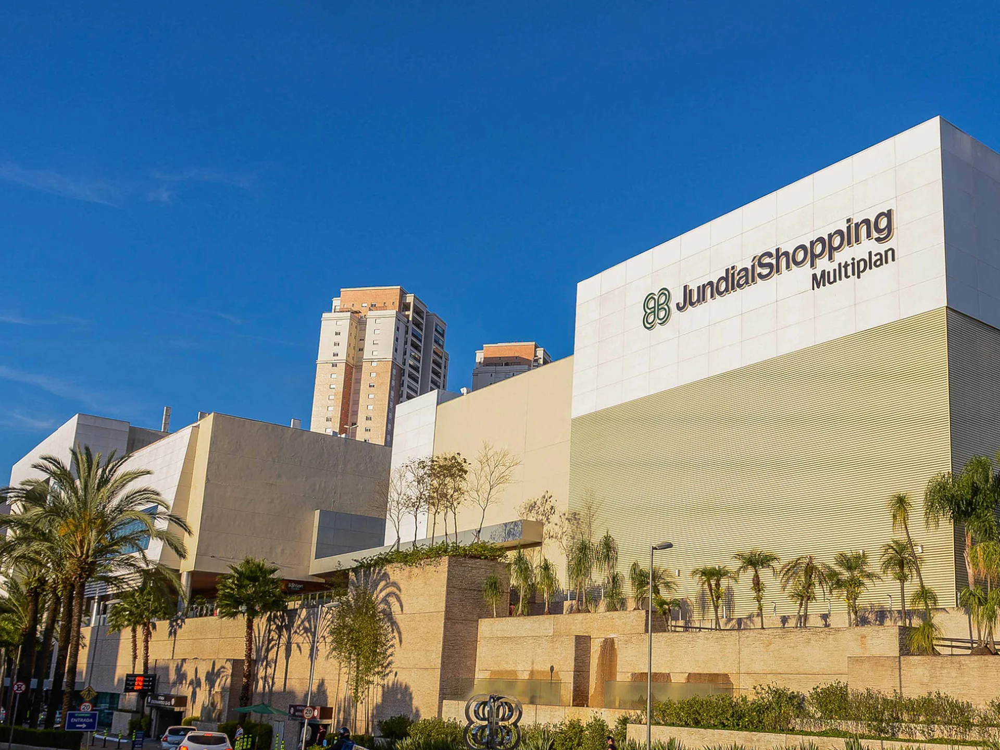

Jundiaí
Cidade importante na logística industrial com forte tradição na produção de frutas (uva e morango) e rotas
turísticas vinculadas ao patrimônio, à natureza e à cultura italiana
Pontos Turísticos
- Serra do Japi (reserva natural e trilhas)
- Jardim Botânico de Jundiaí (diversidade de jardins temáticos)
- Rota da Uva / Vinícolas (turismo rural e degustações)
- Museu da Companhia Paulista e Solar do Barão (história local)
- Parque da Cidade e Parque Engordadouro (lazer ao ar livre)
